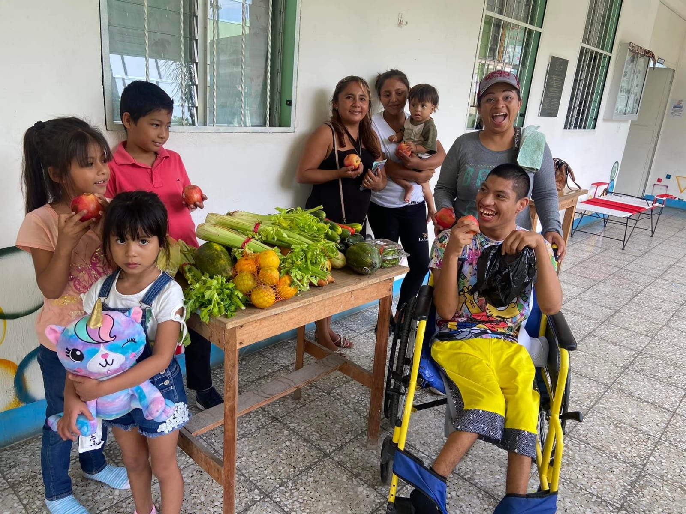

Te presentamos a Alexander Juarez
Con un ingreso familiar promedio de $597.00 al mes en su comunidad, las familias como la de Alexander apenas ganan lo suficiente para cubrir las necesidades básicas.
Solamente se requiere una persona para generar un cambio positivo y duradero en la vida de Frainelis. Tu donación mensual es invertida en la vida de algunos de los niños más vulnerables del mundo.
Encuentra un niño que necesita ser apoyado!
¿Qué es el apadrinamiento de niños y jóvenes?
El apadrinamiento establece una conexión personal entre dos personas —un padrino con el deseo de ayudar y un niño con el deseo de superarse a pesar de su situación económica—.
Nuestro programa de apadrinamiento equipa a los niños y adolescentes con habilidades laborales y de vida esenciales para romper el círculo vicioso de la pobreza para siempre.

opcional** un video de que es el padrinamiento y lo que eso ayuda